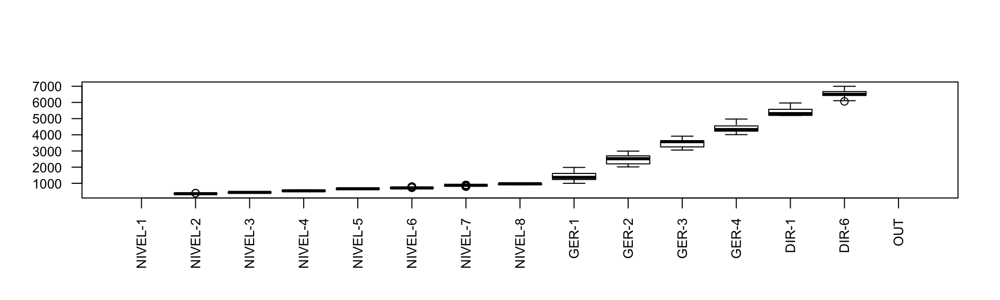
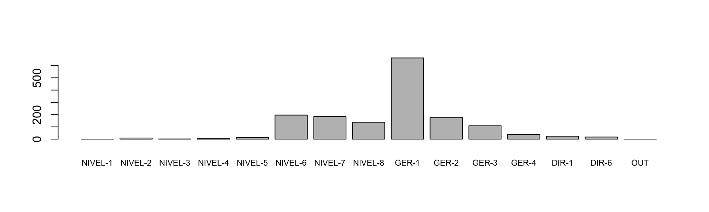
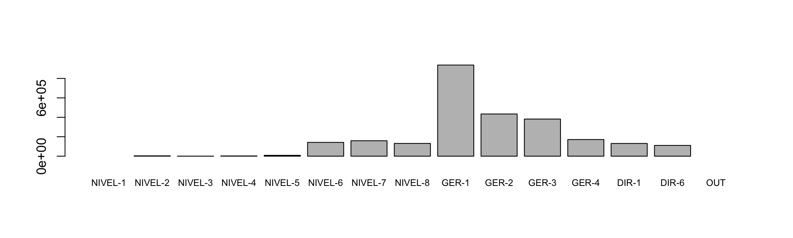

ID <- c(1,2,3,4,5)
IDADE <- c(40,45,25,50,60)
CARGO <- c("TECNICO", "ASSISTENTE", "COORDENADOR","AUXILIAR", "GERENTE")
FORMACAO <- c("ESTATISTICA", "ECONOMIA", "SISTEMAS", "DIREITO","LETRAS")
DEPARTAMENTO = c("DEPARTAMENTO A", "DEPARTAMENTO A", "DEPARTAMENTO A","DEPARTAMENTO B","DEPARTAMENTO B")
RH1 <-data.frame(ID, IDADE, CARGO, FORMACAO, DEPARTAMENTO)
print(RH1)## ID IDADE CARGO FORMACAO DEPARTAMENTO
## 1 1 40 TECNICO ESTATISTICA DEPARTAMENTO A
## 2 2 45 ASSISTENTE ECONOMIA DEPARTAMENTO A
## 3 3 25 COORDENADOR SISTEMAS DEPARTAMENTO A
## 4 4 50 AUXILIAR DIREITO DEPARTAMENTO B
## 5 5 60 GERENTE LETRAS DEPARTAMENTO B##Remove o data frame caso exista
RH <- NULL#Criando o Data Frame
RH <- data.frame(ID = 1:1000,
IDADE = rnorm(1000, mean = 45, sd = 6),
CARGO = sample(gl(5, 200,
labels = c("TECNICO", "ASSISTENTE", "COORDENADOR","AUXILIAR", "GERENTE")),50,replace=TRUE),
FORMACAO = sample(gl(8, 125,
labels = c("ESTATISTICA", "ECONOMIA", "SISTEMAS", "DIREITO","LETRAS", "MATEMATICA","ENGENHARIA","PROFESSOR")),50,replace=TRUE),
DEPARTAMENTO = sample(paste("DEPARTAMENTO", LETTERS[1:5]), 100, replace = TRUE))
head(RH)## ID IDADE CARGO FORMACAO DEPARTAMENTO
## 1 1 50.08577 ASSISTENTE SISTEMAS DEPARTAMENTO E
## 2 2 37.28510 AUXILIAR LETRAS DEPARTAMENTO A
## 3 3 40.43417 GERENTE SISTEMAS DEPARTAMENTO B
## 4 4 48.86021 ASSISTENTE MATEMATICA DEPARTAMENTO A
## 5 5 52.56766 AUXILIAR ESTATISTICA DEPARTAMENTO A
## 6 6 44.89361 GERENTE SISTEMAS DEPARTAMENTO DID <- seq(1:1000)
IDADE <- rnorm(1000, mean = 45, sd = 6)
CARGO <- sample(gl(5, 200,labels = c("TECNICO", "ASSISTENTE", "COORDENADOR","AUXILIAR", "GERENTE")),50,replace=TRUE)
FORMACAO <- sample(gl(8, 125,labels = c("ESTATISTICA", "ECONOMIA", "SISTEMAS", "DIREITO","LETRAS", "MATEMATICA","ENGENHARIA","PROFESSOR")),50,replace=TRUE)
DEPARTAMENTO = sample(paste("DEPARTAMENTO", LETTERS[1:5]), 100, replace = TRUE)
RH2 <- data.frame(ID, IDADE, CARGO, FORMACAO, DEPARTAMENTO)
head(RH2)## ID IDADE CARGO FORMACAO DEPARTAMENTO
## 1 1 41.23677 ASSISTENTE MATEMATICA DEPARTAMENTO D
## 2 2 33.70935 AUXILIAR DIREITO DEPARTAMENTO E
## 3 3 36.62882 TECNICO ECONOMIA DEPARTAMENTO B
## 4 4 46.28952 ASSISTENTE ECONOMIA DEPARTAMENTO A
## 5 5 41.03659 TECNICO PROFESSOR DEPARTAMENTO E
## 6 6 55.33833 ASSISTENTE PROFESSOR DEPARTAMENTO Eis.na(RH$IDADE) <-sample(1:1000, 10)summary(RH)## ID IDADE CARGO FORMACAO
## Min. : 1.0 Min. :26.32 TECNICO :220 SISTEMAS :200
## 1st Qu.: 250.8 1st Qu.:40.95 ASSISTENTE :200 ECONOMIA :160
## Median : 500.5 Median :45.00 COORDENADOR:140 ENGENHARIA:160
## Mean : 500.5 Mean :45.19 AUXILIAR :140 LETRAS :140
## 3rd Qu.: 750.2 3rd Qu.:49.47 GERENTE :300 MATEMATICA:120
## Max. :1000.0 Max. :62.16 PROFESSOR :100
## NA's :10 (Other) :120
## DEPARTAMENTO
## DEPARTAMENTO A:230
## DEPARTAMENTO B:220
## DEPARTAMENTO C:160
## DEPARTAMENTO D:190
## DEPARTAMENTO E:200
##
## table(RH$DEPARTAMENTO)##
## DEPARTAMENTO A DEPARTAMENTO B DEPARTAMENTO C DEPARTAMENTO D DEPARTAMENTO E
## 230 220 160 190 200table(RH$IDADE < 50)##
## FALSE TRUE
## 223 767table(RH$IDADE < 50, useNA = "always")##
## FALSE TRUE <NA>
## 223 767 10table(RH$DEPARTAMENTO, is.na(RH$IDADE))##
## FALSE TRUE
## DEPARTAMENTO A 228 2
## DEPARTAMENTO B 218 2
## DEPARTAMENTO C 159 1
## DEPARTAMENTO D 188 2
## DEPARTAMENTO E 197 3sort(table(RH$DEPARTAMENTO, is.na(RH$IDADE))[, 2],
decreasing = TRUE)## DEPARTAMENTO E DEPARTAMENTO A DEPARTAMENTO B DEPARTAMENTO D DEPARTAMENTO C
## 3 2 2 2 1freq1 <- table(RH$DEPARTAMENTO, is.na(RH$IDADE))print(freq1)##
## FALSE TRUE
## DEPARTAMENTO A 228 2
## DEPARTAMENTO B 218 2
## DEPARTAMENTO C 159 1
## DEPARTAMENTO D 188 2
## DEPARTAMENTO E 197 3prob1 <- prop.table(freq1)cbind(freq1,prob1)## FALSE TRUE FALSE TRUE
## DEPARTAMENTO A 228 2 0.228 0.002
## DEPARTAMENTO B 218 2 0.218 0.002
## DEPARTAMENTO C 159 1 0.159 0.001
## DEPARTAMENTO D 188 2 0.188 0.002
## DEPARTAMENTO E 197 3 0.197 0.003cargos <-NULL
# Carrega os dados
cargos <- read.table("https://raw.githubusercontent.com/flaviobrito/dataudit/master/dados/PROTOTIPO.txt", sep='\t', header=TRUE)
#-------------------------------------------------------------------------------
# Pré-processamento
#-------------------------------------------------------------------------------
# Excluir os brancos antes e depois dos nomes
dados <- as.data.frame(apply(cargos, 2, function(x)gsub(" +$", "", gsub("^ +", "" , x))))
#Renomeia a variável
names(dados)[2] <- "DEPT"
#Limpa caracteres especiais
dados$SALARIO <- sub("\\.", "", dados$SALARIO)
dados$SALARIO <- as.numeric(sub(",", ".", dados$SALARIO))
#Filtra registros
cargos <- subset(dados, SALARIO > 200) # 'cargos um subconjunto de 'dados'
#Cria variáveis a partir de faixas
cargos <- transform(cargos,
CLASSE = cut(SALARIO, breaks=c(0,300,400,500,600,700,800,900,1000,2000,3000,4000,5000,6000,7000, Inf),labels=c("NIVEL-1","NIVEL-2","NIVEL-3","NIVEL-4","NIVEL-5","NIVEL-6","NIVEL-7","NIVEL-8","GER-1","GER-2","GER-3","GER-4","DIR-1","DIR-6", "OUT")))
# Cria novo DF sem os maiores valores
cargos_sem_out <- cargos[!cargos$CLASSE=="OUT",]
# Carrega DF novo para o antigo
cargos<-cargos_sem_out
#Boxplot
boxplot(SALARIO ~ CLASSE, data=cargos, las=2, cex.axis=0.8)
# Quantidade de cargos de cada tipo
barplot(with(cargos, table(cargos$CLASSE)), cex.names=0.7)
# Valor dos cargos de cada tipo
barplot(with(cargos, tapply(SALARIO, CLASSE, sum, na.rm=TRUE)), cex.names=0.7)
#Lista registros iniciais do DF
head(cargos)## SISTEMA DEPT SETOR SALARIO CLASSE
## 1 RH DEPT. MKT SETOR_A 1807.00 GER-1
## 2 RH DEPT. MKT SETOR_A 5475.83 DIR-1
## 3 RH DEPT. MKT SETOR_A 2600.00 GER-2
## 4 RH DEPT. MKT SETOR_A 1329.25 GER-1
## 5 RH DEPT. MKT SETOR_A 1820.00 GER-1
## 6 RH DEPT. MKT SETOR_A 3770.00 GER-3with(cargos, table(SISTEMA,DEPT,CLASSE)) -> tabela
ftable(tabela)## CLASSE NIVEL-1 NIVEL-2 NIVEL-3 NIVEL-4 NIVEL-5 NIVEL-6 NIVEL-7 NIVEL-8 GER-1 GER-2 GER-3 GER-4 DIR-1 DIR-6 OUT
## SISTEMA DEPT
## RH DEPT. ATCLIENT 0 0 0 0 0 1 80 6 58 4 6 2 2 2 0
## DEPT. CMP 0 0 0 2 1 3 0 25 76 55 44 12 4 6 0
## DEPT. FIN 0 0 0 1 0 0 0 3 6 8 8 3 2 0 0
## DEPT. LOG 0 9 1 1 8 185 98 91 306 42 17 14 3 1 0
## DEPT. MKT 0 0 0 0 0 0 0 0 11 2 2 1 1 2 0
## DEPT. TI 0 0 0 0 1 1 0 2 9 8 6 2 1 1 0
## DEPT.RH 0 0 0 0 3 6 5 11 196 56 26 5 11 5 0with(cargos, table(DEPT, CLASSE))## CLASSE
## DEPT NIVEL-1 NIVEL-2 NIVEL-3 NIVEL-4 NIVEL-5 NIVEL-6 NIVEL-7
## DEPT. ATCLIENT 0 0 0 0 0 1 80
## DEPT. CMP 0 0 0 2 1 3 0
## DEPT. FIN 0 0 0 1 0 0 0
## DEPT. LOG 0 9 1 1 8 185 98
## DEPT. MKT 0 0 0 0 0 0 0
## DEPT. TI 0 0 0 0 1 1 0
## DEPT.RH 0 0 0 0 3 6 5
## CLASSE
## DEPT NIVEL-8 GER-1 GER-2 GER-3 GER-4 DIR-1 DIR-6 OUT
## DEPT. ATCLIENT 6 58 4 6 2 2 2 0
## DEPT. CMP 25 76 55 44 12 4 6 0
## DEPT. FIN 3 6 8 8 3 2 0 0
## DEPT. LOG 91 306 42 17 14 3 1 0
## DEPT. MKT 0 11 2 2 1 1 2 0
## DEPT. TI 2 9 8 6 2 1 1 0
## DEPT.RH 11 196 56 26 5 11 5 0#------------------------------------------------------------------------------
#
# ESTATÍSTICAS DESCRITIVAS DOS VALORES
#
#------------------------------------------------------------------------------
library(dplyr)##
## Attaching package: 'dplyr'## The following objects are masked from 'package:stats':
##
## filter, lag## The following objects are masked from 'package:base':
##
## intersect, setdiff, setequal, unionTBL <- cargos %>%
group_by(SISTEMA, DEPT, CLASSE) %>%
summarise(N = n(),
MEDIA = mean(SALARIO, na.rm=TRUE),
SD = sd(SALARIO, na.rm=TRUE),
Q1 = quantile(SALARIO, probs=0.25, na.rm=TRUE),
MEDIANA = median(SALARIO, na.rm=TRUE),
Q3 = quantile(SALARIO, probs=0.75, na.rm=TRUE),
TOTAL = sum(SALARIO, na.rm=TRUE)
)
TBL## Source: local data frame [64 x 10]
## Groups: SISTEMA, DEPT [?]
##
## SISTEMA DEPT CLASSE N MEDIA SD Q1
## (fctr) (fctr) (fctr) (int) (dbl) (dbl) (dbl)
## 1 RH DEPT. ATCLIENT NIVEL-6 1 715.000 NA 715.000
## 2 RH DEPT. ATCLIENT NIVEL-7 80 877.500 0.00000 877.500
## 3 RH DEPT. ATCLIENT NIVEL-8 6 926.250 17.80098 910.000
## 4 RH DEPT. ATCLIENT GER-1 58 1375.917 186.92709 1267.500
## 5 RH DEPT. ATCLIENT GER-2 4 2191.990 144.91460 2067.000
## 6 RH DEPT. ATCLIENT GER-3 6 3814.237 111.55792 3717.188
## 7 RH DEPT. ATCLIENT GER-4 2 4156.750 59.75052 4135.625
## 8 RH DEPT. ATCLIENT DIR-1 2 5770.375 209.12683 5696.438
## 9 RH DEPT. ATCLIENT DIR-6 2 6085.625 29.87526 6075.062
## 10 RH DEPT. CMP NIVEL-4 2 557.350 39.10300 543.525
## .. ... ... ... ... ... ... ...
## Variables not shown: MEDIANA (dbl), Q3 (dbl), TOTAL (dbl)#Cria novo DF
cargos2 <- cargos
#Cria nova variável a partir de um filtro por string
cargos2$Formacao <- with(cargos2,
ifelse(CLASSE %in% c("GER-3","GER-4",levels(cargos2$CLASSE)[grep("DIR-",levels(cargos2$CLASSE))]), "SUP.COMPLETO",
ifelse(CLASSE %in% c("NIVEL-1","NIVEL2"), "FUNDAMENTAL","MÉDIO")))
#Cria variável
cargos$IDADE <-as.numeric(0)
cargos$IDADE <- as.numeric(c(rep(seq(25,60,20),157)))
cargos$IDADE <- trunc(cargos$IDADE)
#Cria variável com base em categoria
cargos$IDADE_CAT[cargos$IDADE > 75] <- "Sênior"
cargos$IDADE_CAT[cargos$IDADE> 45 & cargos$IDADE <= 75] <- "Idade Mediana"
cargos$IDADE_CAT[cargos$IDADE<= 45] <- "Jovem"
#Lista Maior Salário
maior_salario <- cargos[cargos$SALARIO == max(cargos$SALARIO),]
maior_salario## SISTEMA DEPT SETOR SALARIO CLASSE IDADE IDADE_CAT
## 9 RH DEPT. MKT SETOR_A 6997.39 DIR-6 25 Jovemmax(cargos[cargos[,"CLASSE"]=="DIR-6", "SALARIO"]) ## [1] 6997.39max(cargos$SALARIO[cargos$CLASSE =="DIR-6"])## [1] 6997.39#Cria novo DF
rh <- cargos
# AGREGAR DADOS / SUMARIZAÇÃO DE DADOS / TABULAÇÃO CRUZADA
#==========================================================================
# 1. Tabulação Cruzada (contagem de frequências)
with(rh, table(CLASSE)) # uma variável categórica## CLASSE
## NIVEL-1 NIVEL-2 NIVEL-3 NIVEL-4 NIVEL-5 NIVEL-6 NIVEL-7 NIVEL-8 GER-1
## 0 9 1 4 13 196 183 138 662
## GER-2 GER-3 GER-4 DIR-1 DIR-6 OUT
## 175 109 39 24 17 0with(rh, table(CLASSE, IDADE_CAT))## IDADE_CAT
## CLASSE Jovem
## NIVEL-1 0
## NIVEL-2 9
## NIVEL-3 1
## NIVEL-4 4
## NIVEL-5 13
## NIVEL-6 196
## NIVEL-7 183
## NIVEL-8 138
## GER-1 662
## GER-2 175
## GER-3 109
## GER-4 39
## DIR-1 24
## DIR-6 17
## OUT 0xtabs( ~ IDADE_CAT, data=rh)## IDADE_CAT
## Jovem
## 1570xtabs(SALARIO ~ DEPT , data=rh)## DEPT
## DEPT. ATCLIENT DEPT. CMP DEPT. FIN DEPT. LOG DEPT. MKT
## 219954.54 547208.63 86476.00 982767.43 54800.19
## DEPT. TI DEPT.RH
## 80818.82 640931.04xtabs(SALARIO ~ DEPT + CLASSE , data=rh)## CLASSE
## DEPT NIVEL-1 NIVEL-2 NIVEL-3 NIVEL-4 NIVEL-5
## DEPT. ATCLIENT 0.00 0.00 0.00 0.00 0.00
## DEPT. CMP 0.00 0.00 0.00 1114.70 650.00
## DEPT. FIN 0.00 0.00 0.00 520.00 0.00
## DEPT. LOG 0.00 3282.50 438.75 543.40 5355.09
## DEPT. MKT 0.00 0.00 0.00 0.00 0.00
## DEPT. TI 0.00 0.00 0.00 0.00 614.25
## DEPT.RH 0.00 0.00 0.00 0.00 1946.10
## CLASSE
## DEPT NIVEL-6 NIVEL-7 NIVEL-8 GER-1 GER-2
## DEPT. ATCLIENT 715.00 70200.00 5557.50 79803.16 8767.96
## DEPT. CMP 2210.00 0.00 23292.75 112987.77 140757.50
## DEPT. FIN 0.00 0.00 2925.00 9821.50 21320.00
## DEPT. LOG 133874.70 84490.77 86923.54 426058.82 99951.91
## DEPT. MKT 0.00 0.00 0.00 18138.25 5200.00
## DEPT. TI 747.50 0.00 1885.00 12090.00 22231.30
## DEPT.RH 4413.50 4225.00 10465.00 278947.33 136045.65
## CLASSE
## DEPT GER-3 GER-4 DIR-1 DIR-6 OUT
## DEPT. ATCLIENT 22885.42 8313.50 11540.75 12171.25 0.00
## DEPT. CMP 153158.85 51910.30 21680.95 39445.81 0.00
## DEPT. FIN 27709.50 13130.00 11050.00 0.00 0.00
## DEPT. LOG 58534.11 60784.84 15912.00 6617.00 0.00
## DEPT. MKT 7345.00 4972.50 5475.83 13668.61 0.00
## DEPT. TI 22444.50 8830.43 5475.83 6500.01 0.00
## DEPT.RH 89880.05 23289.50 59485.74 32233.17 0.00with(rh, table(DEPT, IDADE, CLASSE))## , , CLASSE = NIVEL-1
##
## IDADE
## DEPT 25 45
## DEPT. ATCLIENT 0 0
## DEPT. CMP 0 0
## DEPT. FIN 0 0
## DEPT. LOG 0 0
## DEPT. MKT 0 0
## DEPT. TI 0 0
## DEPT.RH 0 0
##
## , , CLASSE = NIVEL-2
##
## IDADE
## DEPT 25 45
## DEPT. ATCLIENT 0 0
## DEPT. CMP 0 0
## DEPT. FIN 0 0
## DEPT. LOG 5 4
## DEPT. MKT 0 0
## DEPT. TI 0 0
## DEPT.RH 0 0
##
## , , CLASSE = NIVEL-3
##
## IDADE
## DEPT 25 45
## DEPT. ATCLIENT 0 0
## DEPT. CMP 0 0
## DEPT. FIN 0 0
## DEPT. LOG 0 1
## DEPT. MKT 0 0
## DEPT. TI 0 0
## DEPT.RH 0 0
##
## , , CLASSE = NIVEL-4
##
## IDADE
## DEPT 25 45
## DEPT. ATCLIENT 0 0
## DEPT. CMP 2 0
## DEPT. FIN 1 0
## DEPT. LOG 1 0
## DEPT. MKT 0 0
## DEPT. TI 0 0
## DEPT.RH 0 0
##
## , , CLASSE = NIVEL-5
##
## IDADE
## DEPT 25 45
## DEPT. ATCLIENT 0 0
## DEPT. CMP 1 0
## DEPT. FIN 0 0
## DEPT. LOG 2 6
## DEPT. MKT 0 0
## DEPT. TI 1 0
## DEPT.RH 1 2
##
## , , CLASSE = NIVEL-6
##
## IDADE
## DEPT 25 45
## DEPT. ATCLIENT 1 0
## DEPT. CMP 0 3
## DEPT. FIN 0 0
## DEPT. LOG 94 91
## DEPT. MKT 0 0
## DEPT. TI 0 1
## DEPT.RH 2 4
##
## , , CLASSE = NIVEL-7
##
## IDADE
## DEPT 25 45
## DEPT. ATCLIENT 41 39
## DEPT. CMP 0 0
## DEPT. FIN 0 0
## DEPT. LOG 48 50
## DEPT. MKT 0 0
## DEPT. TI 0 0
## DEPT.RH 1 4
##
## , , CLASSE = NIVEL-8
##
## IDADE
## DEPT 25 45
## DEPT. ATCLIENT 2 4
## DEPT. CMP 12 13
## DEPT. FIN 1 2
## DEPT. LOG 42 49
## DEPT. MKT 0 0
## DEPT. TI 2 0
## DEPT.RH 5 6
##
## , , CLASSE = GER-1
##
## IDADE
## DEPT 25 45
## DEPT. ATCLIENT 29 29
## DEPT. CMP 38 38
## DEPT. FIN 4 2
## DEPT. LOG 158 148
## DEPT. MKT 5 6
## DEPT. TI 4 5
## DEPT.RH 96 100
##
## , , CLASSE = GER-2
##
## IDADE
## DEPT 25 45
## DEPT. ATCLIENT 1 3
## DEPT. CMP 28 27
## DEPT. FIN 4 4
## DEPT. LOG 17 25
## DEPT. MKT 2 0
## DEPT. TI 3 5
## DEPT.RH 30 26
##
## , , CLASSE = GER-3
##
## IDADE
## DEPT 25 45
## DEPT. ATCLIENT 2 4
## DEPT. CMP 25 19
## DEPT. FIN 3 5
## DEPT. LOG 10 7
## DEPT. MKT 0 2
## DEPT. TI 1 5
## DEPT.RH 14 12
##
## , , CLASSE = GER-4
##
## IDADE
## DEPT 25 45
## DEPT. ATCLIENT 2 0
## DEPT. CMP 4 8
## DEPT. FIN 2 1
## DEPT. LOG 8 6
## DEPT. MKT 1 0
## DEPT. TI 2 0
## DEPT.RH 2 3
##
## , , CLASSE = DIR-1
##
## IDADE
## DEPT 25 45
## DEPT. ATCLIENT 1 1
## DEPT. CMP 3 1
## DEPT. FIN 1 1
## DEPT. LOG 2 1
## DEPT. MKT 0 1
## DEPT. TI 1 0
## DEPT.RH 8 3
##
## , , CLASSE = DIR-6
##
## IDADE
## DEPT 25 45
## DEPT. ATCLIENT 1 1
## DEPT. CMP 1 5
## DEPT. FIN 0 0
## DEPT. LOG 1 0
## DEPT. MKT 2 0
## DEPT. TI 1 0
## DEPT.RH 3 2
##
## , , CLASSE = OUT
##
## IDADE
## DEPT 25 45
## DEPT. ATCLIENT 0 0
## DEPT. CMP 0 0
## DEPT. FIN 0 0
## DEPT. LOG 0 0
## DEPT. MKT 0 0
## DEPT. TI 0 0
## DEPT.RH 0 0ftable(with(rh, table(DEPT, IDADE, CLASSE)))## CLASSE NIVEL-1 NIVEL-2 NIVEL-3 NIVEL-4 NIVEL-5 NIVEL-6 NIVEL-7 NIVEL-8 GER-1 GER-2 GER-3 GER-4 DIR-1 DIR-6 OUT
## DEPT IDADE
## DEPT. ATCLIENT 25 0 0 0 0 0 1 41 2 29 1 2 2 1 1 0
## 45 0 0 0 0 0 0 39 4 29 3 4 0 1 1 0
## DEPT. CMP 25 0 0 0 2 1 0 0 12 38 28 25 4 3 1 0
## 45 0 0 0 0 0 3 0 13 38 27 19 8 1 5 0
## DEPT. FIN 25 0 0 0 1 0 0 0 1 4 4 3 2 1 0 0
## 45 0 0 0 0 0 0 0 2 2 4 5 1 1 0 0
## DEPT. LOG 25 0 5 0 1 2 94 48 42 158 17 10 8 2 1 0
## 45 0 4 1 0 6 91 50 49 148 25 7 6 1 0 0
## DEPT. MKT 25 0 0 0 0 0 0 0 0 5 2 0 1 0 2 0
## 45 0 0 0 0 0 0 0 0 6 0 2 0 1 0 0
## DEPT. TI 25 0 0 0 0 1 0 0 2 4 3 1 2 1 1 0
## 45 0 0 0 0 0 1 0 0 5 5 5 0 0 0 0
## DEPT.RH 25 0 0 0 0 1 2 1 5 96 30 14 2 8 3 0
## 45 0 0 0 0 2 4 4 6 100 26 12 3 3 2 0# Agregações
aggregate(rh[, c("IDADE", "SALARIO")],
by=list(DEPT=rh$DEPT),
FUN=mean, na.rm=TRUE)## DEPT IDADE SALARIO
## 1 DEPT. ATCLIENT 35.06211 1366.177
## 2 DEPT. CMP 35.00000 2400.038
## 3 DEPT. FIN 34.67742 2789.548
## 4 DEPT. LOG 35.00000 1266.453
## 5 DEPT. MKT 34.47368 2884.221
## 6 DEPT. TI 35.32258 2607.059
## 7 DEPT.RH 35.00000 1978.182aggregate(rh[, c("SALARIO", "IDADE")],
by=list(DEPT=rh$DEPT, CLASSE=rh$CLASSE),
FUN=mean, na.rm=TRUE)## DEPT CLASSE SALARIO IDADE
## 1 DEPT. LOG NIVEL-2 364.7222 33.88889
## 2 DEPT. LOG NIVEL-3 438.7500 45.00000
## 3 DEPT. CMP NIVEL-4 557.3500 25.00000
## 4 DEPT. FIN NIVEL-4 520.0000 25.00000
## 5 DEPT. LOG NIVEL-4 543.4000 25.00000
## 6 DEPT. CMP NIVEL-5 650.0000 25.00000
## 7 DEPT. LOG NIVEL-5 669.3863 40.00000
## 8 DEPT. TI NIVEL-5 614.2500 25.00000
## 9 DEPT.RH NIVEL-5 648.7000 38.33333
## 10 DEPT. ATCLIENT NIVEL-6 715.0000 25.00000
## 11 DEPT. CMP NIVEL-6 736.6667 45.00000
## 12 DEPT. LOG NIVEL-6 723.6470 34.83784
## 13 DEPT. TI NIVEL-6 747.5000 45.00000
## 14 DEPT.RH NIVEL-6 735.5833 38.33333
## 15 DEPT. ATCLIENT NIVEL-7 877.5000 34.75000
## 16 DEPT. LOG NIVEL-7 862.1507 35.20408
## 17 DEPT.RH NIVEL-7 845.0000 41.00000
## 18 DEPT. ATCLIENT NIVEL-8 926.2500 38.33333
## 19 DEPT. CMP NIVEL-8 931.7100 35.40000
## 20 DEPT. FIN NIVEL-8 975.0000 38.33333
## 21 DEPT. LOG NIVEL-8 955.2037 35.76923
## 22 DEPT. TI NIVEL-8 942.5000 25.00000
## 23 DEPT.RH NIVEL-8 951.3636 35.90909
## 24 DEPT. ATCLIENT GER-1 1375.9166 35.00000
## 25 DEPT. CMP GER-1 1486.6812 35.00000
## 26 DEPT. FIN GER-1 1636.9167 31.66667
## 27 DEPT. LOG GER-1 1392.3491 34.67320
## 28 DEPT. MKT GER-1 1648.9318 35.90909
## 29 DEPT. TI GER-1 1343.3333 36.11111
## 30 DEPT.RH GER-1 1423.2007 35.20408
## 31 DEPT. ATCLIENT GER-2 2191.9900 40.00000
## 32 DEPT. CMP GER-2 2559.2273 34.81818
## 33 DEPT. FIN GER-2 2665.0000 35.00000
## 34 DEPT. LOG GER-2 2379.8074 36.90476
## 35 DEPT. MKT GER-2 2600.0000 25.00000
## 36 DEPT. TI GER-2 2778.9125 37.50000
## 37 DEPT.RH GER-2 2429.3866 34.28571
## 38 DEPT. ATCLIENT GER-3 3814.2367 38.33333
## 39 DEPT. CMP GER-3 3480.8830 33.63636
## 40 DEPT. FIN GER-3 3463.6875 37.50000
## 41 DEPT. LOG GER-3 3443.1829 33.23529
## 42 DEPT. MKT GER-3 3672.5000 45.00000
## 43 DEPT. TI GER-3 3740.7500 41.66667
## 44 DEPT.RH GER-3 3456.9250 34.23077
## 45 DEPT. ATCLIENT GER-4 4156.7500 25.00000
## 46 DEPT. CMP GER-4 4325.8583 38.33333
## 47 DEPT. FIN GER-4 4376.6667 31.66667
## 48 DEPT. LOG GER-4 4341.7743 33.57143
## 49 DEPT. MKT GER-4 4972.5000 25.00000
## 50 DEPT. TI GER-4 4415.2150 25.00000
## 51 DEPT.RH GER-4 4657.9000 37.00000
## 52 DEPT. ATCLIENT DIR-1 5770.3750 35.00000
## 53 DEPT. CMP DIR-1 5420.2375 30.00000
## 54 DEPT. FIN DIR-1 5525.0000 35.00000
## 55 DEPT. LOG DIR-1 5304.0000 31.66667
## 56 DEPT. MKT DIR-1 5475.8300 45.00000
## 57 DEPT. TI DIR-1 5475.8300 25.00000
## 58 DEPT.RH DIR-1 5407.7945 30.45455
## 59 DEPT. ATCLIENT DIR-6 6085.6250 35.00000
## 60 DEPT. CMP DIR-6 6574.3017 41.66667
## 61 DEPT. LOG DIR-6 6617.0000 25.00000
## 62 DEPT. MKT DIR-6 6834.3050 25.00000
## 63 DEPT. TI DIR-6 6500.0100 25.00000
## 64 DEPT.RH DIR-6 6446.6340 33.00000library(gmodels)
CrossTable(cargos$CLASSE, cargos$CLASSE)##
##
## Cell Contents
## |-------------------------|
## | N |
## | Chi-square contribution |
## | N / Row Total |
## | N / Col Total |
## | N / Table Total |
## |-------------------------|
##
##
## Total Observations in Table: 1570
##
##
## | cargos$CLASSE
## cargos$CLASSE | NIVEL-2 | NIVEL-3 | NIVEL-4 | NIVEL-5 | NIVEL-6 | NIVEL-7 | NIVEL-8 | GER-1 | GER-2 | GER-3 | GER-4 | DIR-1 | DIR-6 | Row Total |
## --------------|-----------|-----------|-----------|-----------|-----------|-----------|-----------|-----------|-----------|-----------|-----------|-----------|-----------|-----------|
## NIVEL-2 | 9 | 0 | 0 | 0 | 0 | 0 | 0 | 0 | 0 | 0 | 0 | 0 | 0 | 9 |
## | 1552.052 | 0.006 | 0.023 | 0.075 | 1.124 | 1.049 | 0.791 | 3.795 | 1.003 | 0.625 | 0.224 | 0.138 | 0.097 | |
## | 1.000 | 0.000 | 0.000 | 0.000 | 0.000 | 0.000 | 0.000 | 0.000 | 0.000 | 0.000 | 0.000 | 0.000 | 0.000 | 0.006 |
## | 1.000 | 0.000 | 0.000 | 0.000 | 0.000 | 0.000 | 0.000 | 0.000 | 0.000 | 0.000 | 0.000 | 0.000 | 0.000 | |
## | 0.006 | 0.000 | 0.000 | 0.000 | 0.000 | 0.000 | 0.000 | 0.000 | 0.000 | 0.000 | 0.000 | 0.000 | 0.000 | |
## --------------|-----------|-----------|-----------|-----------|-----------|-----------|-----------|-----------|-----------|-----------|-----------|-----------|-----------|-----------|
## NIVEL-3 | 0 | 1 | 0 | 0 | 0 | 0 | 0 | 0 | 0 | 0 | 0 | 0 | 0 | 1 |
## | 0.006 | 1568.001 | 0.003 | 0.008 | 0.125 | 0.117 | 0.088 | 0.422 | 0.111 | 0.069 | 0.025 | 0.015 | 0.011 | |
## | 0.000 | 1.000 | 0.000 | 0.000 | 0.000 | 0.000 | 0.000 | 0.000 | 0.000 | 0.000 | 0.000 | 0.000 | 0.000 | 0.001 |
## | 0.000 | 1.000 | 0.000 | 0.000 | 0.000 | 0.000 | 0.000 | 0.000 | 0.000 | 0.000 | 0.000 | 0.000 | 0.000 | |
## | 0.000 | 0.001 | 0.000 | 0.000 | 0.000 | 0.000 | 0.000 | 0.000 | 0.000 | 0.000 | 0.000 | 0.000 | 0.000 | |
## --------------|-----------|-----------|-----------|-----------|-----------|-----------|-----------|-----------|-----------|-----------|-----------|-----------|-----------|-----------|
## NIVEL-4 | 0 | 0 | 4 | 0 | 0 | 0 | 0 | 0 | 0 | 0 | 0 | 0 | 0 | 4 |
## | 0.023 | 0.003 | 1562.010 | 0.033 | 0.499 | 0.466 | 0.352 | 1.687 | 0.446 | 0.278 | 0.099 | 0.061 | 0.043 | |
## | 0.000 | 0.000 | 1.000 | 0.000 | 0.000 | 0.000 | 0.000 | 0.000 | 0.000 | 0.000 | 0.000 | 0.000 | 0.000 | 0.003 |
## | 0.000 | 0.000 | 1.000 | 0.000 | 0.000 | 0.000 | 0.000 | 0.000 | 0.000 | 0.000 | 0.000 | 0.000 | 0.000 | |
## | 0.000 | 0.000 | 0.003 | 0.000 | 0.000 | 0.000 | 0.000 | 0.000 | 0.000 | 0.000 | 0.000 | 0.000 | 0.000 | |
## --------------|-----------|-----------|-----------|-----------|-----------|-----------|-----------|-----------|-----------|-----------|-----------|-----------|-----------|-----------|
## NIVEL-5 | 0 | 0 | 0 | 13 | 0 | 0 | 0 | 0 | 0 | 0 | 0 | 0 | 0 | 13 |
## | 0.075 | 0.008 | 0.033 | 1544.108 | 1.623 | 1.515 | 1.143 | 5.482 | 1.449 | 0.903 | 0.323 | 0.199 | 0.141 | |
## | 0.000 | 0.000 | 0.000 | 1.000 | 0.000 | 0.000 | 0.000 | 0.000 | 0.000 | 0.000 | 0.000 | 0.000 | 0.000 | 0.008 |
## | 0.000 | 0.000 | 0.000 | 1.000 | 0.000 | 0.000 | 0.000 | 0.000 | 0.000 | 0.000 | 0.000 | 0.000 | 0.000 | |
## | 0.000 | 0.000 | 0.000 | 0.008 | 0.000 | 0.000 | 0.000 | 0.000 | 0.000 | 0.000 | 0.000 | 0.000 | 0.000 | |
## --------------|-----------|-----------|-----------|-----------|-----------|-----------|-----------|-----------|-----------|-----------|-----------|-----------|-----------|-----------|
## NIVEL-6 | 0 | 0 | 0 | 0 | 196 | 0 | 0 | 0 | 0 | 0 | 0 | 0 | 0 | 196 |
## | 1.124 | 0.125 | 0.499 | 1.623 | 1202.469 | 22.846 | 17.228 | 82.645 | 21.847 | 13.608 | 4.869 | 2.996 | 2.122 | |
## | 0.000 | 0.000 | 0.000 | 0.000 | 1.000 | 0.000 | 0.000 | 0.000 | 0.000 | 0.000 | 0.000 | 0.000 | 0.000 | 0.125 |
## | 0.000 | 0.000 | 0.000 | 0.000 | 1.000 | 0.000 | 0.000 | 0.000 | 0.000 | 0.000 | 0.000 | 0.000 | 0.000 | |
## | 0.000 | 0.000 | 0.000 | 0.000 | 0.125 | 0.000 | 0.000 | 0.000 | 0.000 | 0.000 | 0.000 | 0.000 | 0.000 | |
## --------------|-----------|-----------|-----------|-----------|-----------|-----------|-----------|-----------|-----------|-----------|-----------|-----------|-----------|-----------|
## NIVEL-7 | 0 | 0 | 0 | 0 | 0 | 183 | 0 | 0 | 0 | 0 | 0 | 0 | 0 | 183 |
## | 1.049 | 0.117 | 0.466 | 1.515 | 22.846 | 1225.331 | 16.085 | 77.163 | 20.398 | 12.705 | 4.546 | 2.797 | 1.982 | |
## | 0.000 | 0.000 | 0.000 | 0.000 | 0.000 | 1.000 | 0.000 | 0.000 | 0.000 | 0.000 | 0.000 | 0.000 | 0.000 | 0.117 |
## | 0.000 | 0.000 | 0.000 | 0.000 | 0.000 | 1.000 | 0.000 | 0.000 | 0.000 | 0.000 | 0.000 | 0.000 | 0.000 | |
## | 0.000 | 0.000 | 0.000 | 0.000 | 0.000 | 0.117 | 0.000 | 0.000 | 0.000 | 0.000 | 0.000 | 0.000 | 0.000 | |
## --------------|-----------|-----------|-----------|-----------|-----------|-----------|-----------|-----------|-----------|-----------|-----------|-----------|-----------|-----------|
## NIVEL-8 | 0 | 0 | 0 | 0 | 0 | 0 | 138 | 0 | 0 | 0 | 0 | 0 | 0 | 138 |
## | 0.791 | 0.088 | 0.352 | 1.143 | 17.228 | 16.085 | 1306.130 | 58.189 | 15.382 | 9.581 | 3.428 | 2.110 | 1.494 | |
## | 0.000 | 0.000 | 0.000 | 0.000 | 0.000 | 0.000 | 1.000 | 0.000 | 0.000 | 0.000 | 0.000 | 0.000 | 0.000 | 0.088 |
## | 0.000 | 0.000 | 0.000 | 0.000 | 0.000 | 0.000 | 1.000 | 0.000 | 0.000 | 0.000 | 0.000 | 0.000 | 0.000 | |
## | 0.000 | 0.000 | 0.000 | 0.000 | 0.000 | 0.000 | 0.088 | 0.000 | 0.000 | 0.000 | 0.000 | 0.000 | 0.000 | |
## --------------|-----------|-----------|-----------|-----------|-----------|-----------|-----------|-----------|-----------|-----------|-----------|-----------|-----------|-----------|
## GER-1 | 0 | 0 | 0 | 0 | 0 | 0 | 0 | 662 | 0 | 0 | 0 | 0 | 0 | 662 |
## | 3.795 | 0.422 | 1.687 | 5.482 | 82.645 | 77.163 | 58.189 | 525.136 | 73.790 | 45.961 | 16.445 | 10.120 | 7.168 | |
## | 0.000 | 0.000 | 0.000 | 0.000 | 0.000 | 0.000 | 0.000 | 1.000 | 0.000 | 0.000 | 0.000 | 0.000 | 0.000 | 0.422 |
## | 0.000 | 0.000 | 0.000 | 0.000 | 0.000 | 0.000 | 0.000 | 1.000 | 0.000 | 0.000 | 0.000 | 0.000 | 0.000 | |
## | 0.000 | 0.000 | 0.000 | 0.000 | 0.000 | 0.000 | 0.000 | 0.422 | 0.000 | 0.000 | 0.000 | 0.000 | 0.000 | |
## --------------|-----------|-----------|-----------|-----------|-----------|-----------|-----------|-----------|-----------|-----------|-----------|-----------|-----------|-----------|
## GER-2 | 0 | 0 | 0 | 0 | 0 | 0 | 0 | 0 | 175 | 0 | 0 | 0 | 0 | 175 |
## | 1.003 | 0.111 | 0.446 | 1.449 | 21.847 | 20.398 | 15.382 | 73.790 | 1239.506 | 12.150 | 4.347 | 2.675 | 1.895 | |
## | 0.000 | 0.000 | 0.000 | 0.000 | 0.000 | 0.000 | 0.000 | 0.000 | 1.000 | 0.000 | 0.000 | 0.000 | 0.000 | 0.111 |
## | 0.000 | 0.000 | 0.000 | 0.000 | 0.000 | 0.000 | 0.000 | 0.000 | 1.000 | 0.000 | 0.000 | 0.000 | 0.000 | |
## | 0.000 | 0.000 | 0.000 | 0.000 | 0.000 | 0.000 | 0.000 | 0.000 | 0.111 | 0.000 | 0.000 | 0.000 | 0.000 | |
## --------------|-----------|-----------|-----------|-----------|-----------|-----------|-----------|-----------|-----------|-----------|-----------|-----------|-----------|-----------|
## GER-3 | 0 | 0 | 0 | 0 | 0 | 0 | 0 | 0 | 0 | 109 | 0 | 0 | 0 | 109 |
## | 0.625 | 0.069 | 0.278 | 0.903 | 13.608 | 12.705 | 9.581 | 45.961 | 12.150 | 1359.568 | 2.708 | 1.666 | 1.180 | |
## | 0.000 | 0.000 | 0.000 | 0.000 | 0.000 | 0.000 | 0.000 | 0.000 | 0.000 | 1.000 | 0.000 | 0.000 | 0.000 | 0.069 |
## | 0.000 | 0.000 | 0.000 | 0.000 | 0.000 | 0.000 | 0.000 | 0.000 | 0.000 | 1.000 | 0.000 | 0.000 | 0.000 | |
## | 0.000 | 0.000 | 0.000 | 0.000 | 0.000 | 0.000 | 0.000 | 0.000 | 0.000 | 0.069 | 0.000 | 0.000 | 0.000 | |
## --------------|-----------|-----------|-----------|-----------|-----------|-----------|-----------|-----------|-----------|-----------|-----------|-----------|-----------|-----------|
## GER-4 | 0 | 0 | 0 | 0 | 0 | 0 | 0 | 0 | 0 | 0 | 39 | 0 | 0 | 39 |
## | 0.224 | 0.025 | 0.099 | 0.323 | 4.869 | 4.546 | 3.428 | 16.445 | 4.347 | 2.708 | 1492.969 | 0.596 | 0.422 | |
## | 0.000 | 0.000 | 0.000 | 0.000 | 0.000 | 0.000 | 0.000 | 0.000 | 0.000 | 0.000 | 1.000 | 0.000 | 0.000 | 0.025 |
## | 0.000 | 0.000 | 0.000 | 0.000 | 0.000 | 0.000 | 0.000 | 0.000 | 0.000 | 0.000 | 1.000 | 0.000 | 0.000 | |
## | 0.000 | 0.000 | 0.000 | 0.000 | 0.000 | 0.000 | 0.000 | 0.000 | 0.000 | 0.000 | 0.025 | 0.000 | 0.000 | |
## --------------|-----------|-----------|-----------|-----------|-----------|-----------|-----------|-----------|-----------|-----------|-----------|-----------|-----------|-----------|
## DIR-1 | 0 | 0 | 0 | 0 | 0 | 0 | 0 | 0 | 0 | 0 | 0 | 24 | 0 | 24 |
## | 0.138 | 0.015 | 0.061 | 0.199 | 2.996 | 2.797 | 2.110 | 10.120 | 2.675 | 1.666 | 0.596 | 1522.367 | 0.260 | |
## | 0.000 | 0.000 | 0.000 | 0.000 | 0.000 | 0.000 | 0.000 | 0.000 | 0.000 | 0.000 | 0.000 | 1.000 | 0.000 | 0.015 |
## | 0.000 | 0.000 | 0.000 | 0.000 | 0.000 | 0.000 | 0.000 | 0.000 | 0.000 | 0.000 | 0.000 | 1.000 | 0.000 | |
## | 0.000 | 0.000 | 0.000 | 0.000 | 0.000 | 0.000 | 0.000 | 0.000 | 0.000 | 0.000 | 0.000 | 0.015 | 0.000 | |
## --------------|-----------|-----------|-----------|-----------|-----------|-----------|-----------|-----------|-----------|-----------|-----------|-----------|-----------|-----------|
## DIR-6 | 0 | 0 | 0 | 0 | 0 | 0 | 0 | 0 | 0 | 0 | 0 | 0 | 17 | 17 |
## | 0.097 | 0.011 | 0.043 | 0.141 | 2.122 | 1.982 | 1.494 | 7.168 | 1.895 | 1.180 | 0.422 | 0.260 | 1536.184 | |
## | 0.000 | 0.000 | 0.000 | 0.000 | 0.000 | 0.000 | 0.000 | 0.000 | 0.000 | 0.000 | 0.000 | 0.000 | 1.000 | 0.011 |
## | 0.000 | 0.000 | 0.000 | 0.000 | 0.000 | 0.000 | 0.000 | 0.000 | 0.000 | 0.000 | 0.000 | 0.000 | 1.000 | |
## | 0.000 | 0.000 | 0.000 | 0.000 | 0.000 | 0.000 | 0.000 | 0.000 | 0.000 | 0.000 | 0.000 | 0.000 | 0.011 | |
## --------------|-----------|-----------|-----------|-----------|-----------|-----------|-----------|-----------|-----------|-----------|-----------|-----------|-----------|-----------|
## Column Total | 9 | 1 | 4 | 13 | 196 | 183 | 138 | 662 | 175 | 109 | 39 | 24 | 17 | 1570 |
## | 0.006 | 0.001 | 0.003 | 0.008 | 0.125 | 0.117 | 0.088 | 0.422 | 0.111 | 0.069 | 0.025 | 0.015 | 0.011 | |
## --------------|-----------|-----------|-----------|-----------|-----------|-----------|-----------|-----------|-----------|-----------|-----------|-----------|-----------|-----------|
##
## installed.packages()[names(sessionInfo()$otherPkgs), "Version"]## gmodels dplyr
## "2.16.2" "0.4.3"